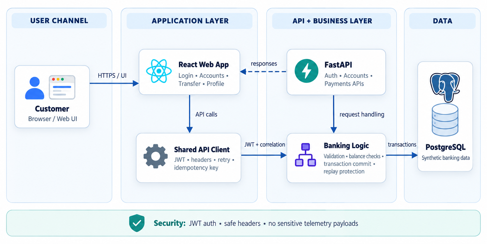
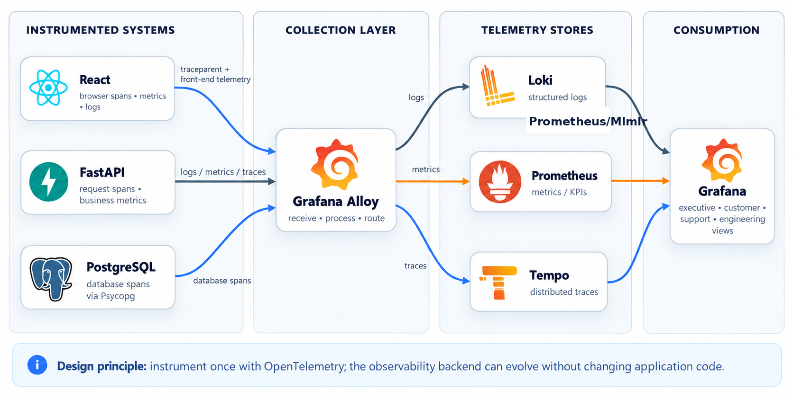
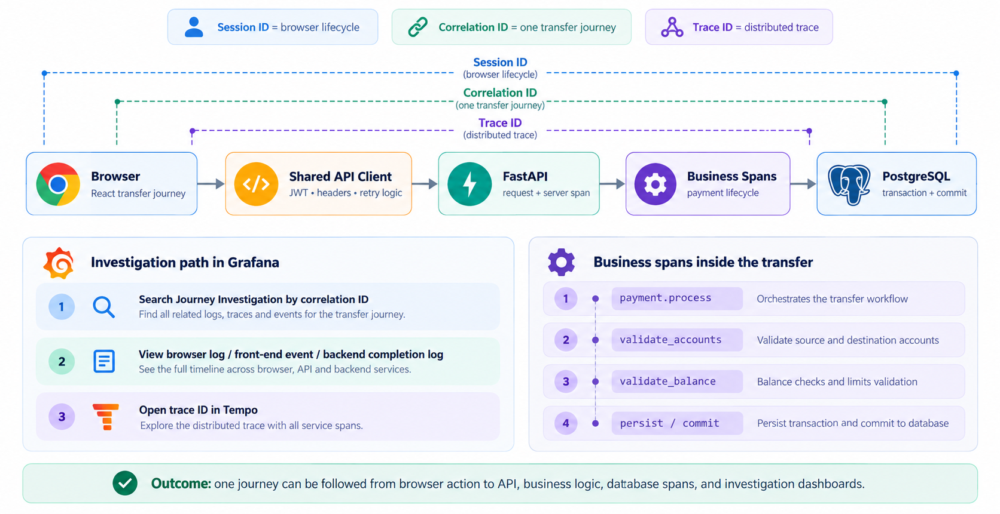
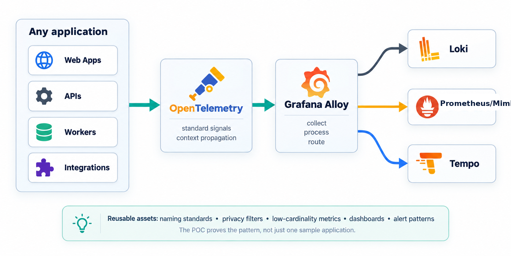

A practical end-to-end observability solution for customer journey monitoring across React, FastAPI, PostgreSQL, OpenTelemetry, Grafana Alloy, Loki, Prometheus/Mimir, Tempo, and Grafana.
Dhaval Mistry | Mahantai Journal
The sample application is intentionally small, but the observability pattern is designed to be reusable across enterprise applications.



No passwords, access tokens, account numbers, transfer amounts, request bodies, response bodies, or SQL parameter values.
Metrics stay low-cardinality. Correlation IDs and trace IDs are searchable where useful, but not promoted as metric labels.
Telemetry remains practical for investigation without copying sensitive banking data into the observability backend.
